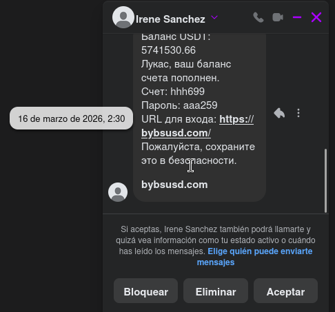
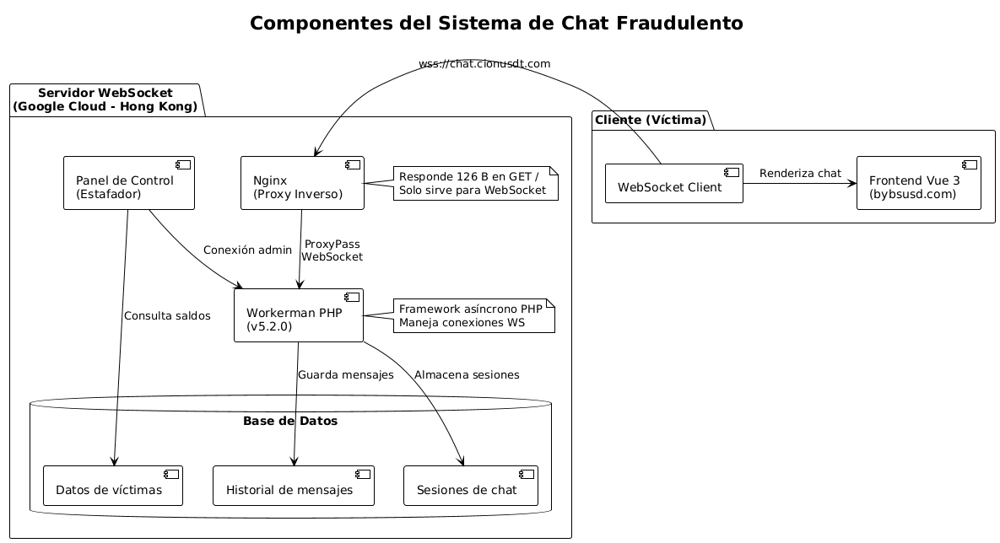
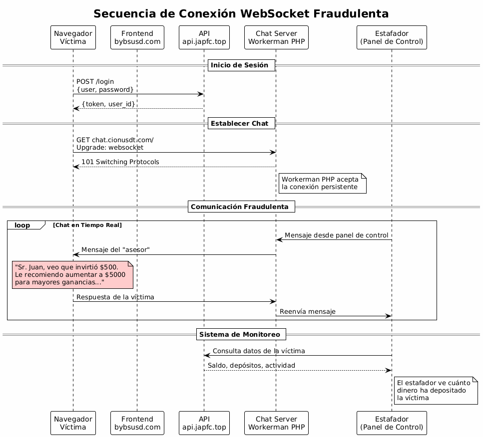
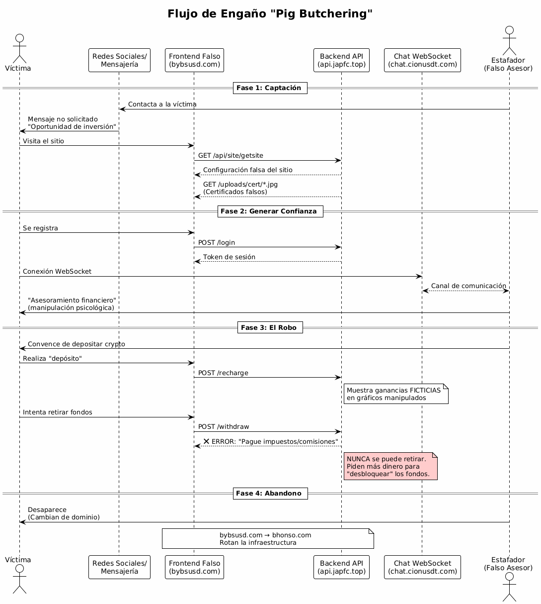

Red de Estafa "Pig Butchering" — Fake Crypto Exchange Multi-Dominio
Investigación técnica completa de una red de estafa tipo Pig Butchering que opera un falso exchange de criptomonedas con rotación rápida de dominios, WebSocket con Workerman PHP, API con captcha roto y certificados falsos. Incluye IoCs, diagramas de infraestructura y análisis de cada componente.
00. Resumen Ejecutivo
Se ha identificado y analizado una red de estafa tipo "Pig Butchering" que opera una plataforma falsa de intercambio de criptomonedas dirigida a usuarios hispanohablantes. La infraestructura utiliza rotación rápida de dominios para evadir bloqueos, WebSocket con Workerman PHP para chat fraudulento en tiempo real, y una API que expone claves de validación de captcha al cliente.
La red está compuesta por al menos 7 dominios alojados en Google Cloud Platform (Hong Kong/Singapur), de los cuales 3 ya están bloqueados por múltiples servicios de threat intelligence (OpenDNS, Hagezi Threat Feed, DNS4EU, OPSWAT).
Fecha del informe: 2026-05-26. La infraestructura sigue operativa con dominios rotativos. Se recomienda bloqueo inmediato de todos los IoCs listados en este artículo.
01. Pig Butchering: El Contexto Global de una Epidemia
El término "Pig Butchering" describe una modalidad de estafa donde la víctima es "engordada" durante semanas o meses antes del sacrificio financiero. A diferencia de otros fraudes, aquí el estafador invierte tiempo en construir una relación de confianza con la víctima a través de mensajes no solicitados, conversaciones persistentes y la promesa de inversiones altamente rentables en criptomonedas.
Según el informe del FBI de 2024, las estafas de inversión en criptomonedas representaron pérdidas superiores a 3.900 millones de dólares en Estados Unidos, siendo el Pig Butchering la categoría de mayor crecimiento. El Departamento de Justicia de EE.UU. ha desmantelado operaciones que utilizaban infraestructura en el sudeste asiático, donde complejos enteros operan como fábricas de estafas con personal traficado y forzado a ejecutar estos esquemas. En 2025, Europol coordinó la Operación Dogger, que resultó en la detención de más de 200 personas vinculadas a redes de Pig Butchering que operaban desde Camboya, Laos y Myanmar, con pérdidas estimadas en más de 400 millones de euros solo en Europa.
La FTC reportó que en el primer semestre de 2024, las pérdidas por task scams y estafas de inversión alcanzaron los 220 millones de dólares solo en Estados Unidos, con un patrón consistente: pequeños pagos iniciales para generar confianza, seguidos de una exigencia de "inversión" que nunca se recupera. En 2023, el Departamento de Justicia de EE.UU. incautó más de 112 millones de dólares en criptomonedas vinculadas a esquemas de Pig Butchering, en una de las mayores confiscaciones de activos digitales relacionadas con fraudes de inversión hasta la fecha.
Este caso guarda paralelismos directos con la investigación que documenté anteriormente sobre la red de estafa piramidal global mapeada con VirusTotal, donde un número sudafricano iniciaba el contacto ofreciendo trabajos de clasificación de hoteles. En aquella ocasión, la infraestructura de los estafadores también se alojaba en Hong Kong, utilizaba exchanges falsos y reciclaba plantillas sin ofuscar. La metodología de OSINT y mapeo de infraestructura que desarrollé en ese caso —documentado en detalle en la Threat Hunter Recollection— es exactamente la que apliqué aquí. La diferencia es que esta red de Pig Butchering es más sofisticada técnicamente: tiene rotación de dominios automatizada, WebSocket en tiempo real y una API que, irónicamente, está peor asegurada que la de los task scams.
Este análisis es la continuación directa de la metodología que apliqué en el mapeo de la red de estafa piramidal. En aquel caso, los estafadores operaban con task scams y un falso exchange llamado VCIMP. En este, utilizan Pig Butchering con un exchange llamado bybsusd.com. En ambos casos, la infraestructura está alojada en Hong Kong, los certificados son falsos, y el código fuente revela más de lo que los atacantes creen. Si no has leído esa investigación, está completa en la Threat Hunter Recollection.
02. Fase 1: Captación — El Mensaje Inicial
Todo comienza con un mensaje no solicitado. En este caso, la captura evidencia el primer contacto recibido a través de Facebook Messenger el 16 de marzo de 2026 a las 2:30. El remitente es un perfil con el nombre hispano "Irene Sanchez", una identidad probablemente falsa o comprometida para generar confianza inicial.

El texto del mensaje, escrito en ruso a pesar del nombre en español del perfil, contiene todos los elementos del anzuelo:
- Balance USDT: 5,741,530.66 — Una cifra astronómica para disparar la codicia o la curiosidad.
- "Lucas, el balance de su cuenta ha sido recargado" — El uso de un nombre específico sugiere una campaña masiva con plantillas semiautomatizadas.
- Credenciales preconfiguradas: Cuenta hhh699, Contraseña aaa259.
- URL de acceso: https://bybsusd.com/ — El dominio que coincide exactamente con la infraestructura analizada.
El mensaje combina varios disparadores psicológicos: una suma de dinero enorme (codicia), credenciales "exclusivas" (sentido de oportunidad única), y un tono formal bancario ("Por favor, guarde esto de forma segura"). La víctima no necesita registrarse: ya tiene una cuenta "precargada" esperándola. Solo tiene que iniciar sesión.
03. Infraestructura Técnica de la Estafa
Arquitectura General
El siguiente diagrama detalla la arquitectura técnica global utilizada por los ciberdelincuentes y cómo interactúa la víctima con cada componente, así como los servicios de seguridad que intentan mitigarla.

Frontend: Vue 3 + Vant UI + Vite
El frontend está construido con Vue 3 usando Vite como bundler y Vant UI como librería de componentes móviles. El código está ofuscado y dividido en múltiples chunks. Los módulos específicos de la estafa revelan todas las funcionalidades del exchange falso:
- financial-CPeXl-Vn.js — Planes de inversión falsos.
- kline-j6UyA4Q3.js — Gráficos de velas (trading falso).
- vip-B8AdYRya.js — Sistema VIP piramidal.
- invite-g2xk1CV9.js — Sistema de referidos.
- recharge-CWI3W1iR.js — Depósitos de criptomonedas.
- withdraw-B3IhVFcd.js — Retiros (NUNCA procesados).
Backend API: api.japfc.top
El núcleo lógico de la estafa reside en api.japfc.top (IP 156.254.5.40). Los endpoints descubiertos incluyen:
- POST /api/Carousel/getList — Banners de ofertas falsas.
- GET /api/site/getsite — Configuración del sitio fraudulento.
- POST /login — Autenticación de víctimas.
- GET /uploads/cert/*.jpg — Certificados falsos para simular legitimidad.
- GET /index/verify — Sistema de Captcha (VULNERABLE).
El endpoint /index/verify devuelve tanto la imagen del captcha como la clave de validación en la misma respuesta: {"img": "data:image/jpeg;base64,...", "captcha_key": "abc123..."}. La clave de validación viaja al cliente, permitiendo ataques de replay, bypass del captcha y reutilización de tokens. El backend externaliza la validación y confía en la clave que el propio cliente le devuelve.
04. Sistema de Chat WebSocket Fraudulento
El chat en tiempo real es el componente clave para la manipulación psicológica de la víctima. Utiliza Workerman PHP v5.2.0, un framework asíncrono legítimo, sobre Nginx como proxy inverso en Google Cloud Hong Kong.


El flujo es quirúrgico: la víctima inicia sesión, recibe un token, y establece una conexión WebSocket persistente. El estafador, desde su panel de control, monitorea en tiempo real el saldo y los depósitos de la víctima para ajustar su discurso de ingeniería social. El mensaje típico: "Sr. Juan, veo que invirtió $500. Le recomiendo aumentar a $5000 para mayores ganancias..."
Esta técnica de manipulación en tiempo real mediante WebSocket es una evolución directa de lo que documenté en la Threat Hunter Recollection con los task scams operados desde Sudáfrica. En aquel caso, la comunicación era asíncrona por Telegram. Aquí, los estafadores implementaron un canal persistente que les permite ver en tiempo real cada acción de la víctima sobre la plataforma. La sofisticación técnica es mayor, pero el patrón de ingeniería social es idéntico: generar confianza, mostrar ganancias ficticias, y bloquear el retiro.
05. El Ciclo Completo de la Estafa

El diagrama de secuencia ilustra las cuatro fases cronológicas del ciclo de vida de la estafa. La víctima pasa de recibir un mensaje no solicitado a depositar criptomonedas reales en una plataforma que nunca le permitirá retirar. Cuando intenta hacerlo, el sistema exige el pago de supuestos "impuestos o comisiones". Una vez consumado el robo, los estafadores desaparecen y rotan la infraestructura a un nuevo dominio.
06. Indicadores de Compromiso (IoCs)
Dominios Maliciosos
| Dominio | IP | Ubicación | Estado |
|---|---|---|---|
| bybsusd.com | 156.254.5.40 | Hong Kong | Bloqueado |
| api.japfc.top | 156.254.5.40 | Hong Kong | Bloqueado |
| chat.cionusdt.com | 34.150.85.92 | Hong Kong | Bloqueado |
| chat.bnc-a.com | 0.0.0.0 | - | Caído |
| bhonso.com | 156.254.5.40 | Hong Kong | Activo |
| bholos.com | 34.150.85.92 | Hong Kong | Activo |
| xoiunc.com | 156.254.5.115 / 34.142.203.77 | Hong Kong / Singapur | Activo |
| xinusdt.com | 34.87.125.55 | Singapur | Activo |
IPs Maliciosas
34.150.85.92 → chat.cionusdt.com, bholos.com
156.254.5.115 → xoiunc.com
34.142.203.77 → xoiunc.com
34.87.125.55 → xinusdt.com
Endpoints Maliciosos
api.japfc.top/api/site/getsite → Configuración del sitio fraudulento
api.japfc.top/index/index/verify → Captcha con fuga de claves
api.japfc.top/index/login → Autenticación de víctimas
api.japfc.top/uploads/cert/ → Certificados falsos (jpg)
chat.cionusdt.com/ → WebSocket para chat fraudulento
07. Sistema de Rotación de Dominios
La red emplea rotación rápida de dominios para evadir bloqueos. El patrón identificado muestra 4 dominios en 22 días:
2026-05-08 → bholos.com (Hong Kong)
2026-05-17 → bhonso.com (Hong Kong)
2026-05-20 → xoiunc.com (Hong Kong/Singapur)
2026-05-26 → bybsusd.com (Hong Kong)
Los nombres son semi-aleatorios (byb, bhon, bhol, xoin, xin) pero todos terminan en usd o usdt para asociarse con criptomonedas. Las IPs rotan entre Hong Kong y Singapur, pero el backend (api.japfc.top) permanece constante, siendo el eslabón más débil de la infraestructura.
08. Estado de Detección y Bloqueo
| Servicio | bybsusd.com | api.japfc.top | chat.cionusdt.com |
|---|---|---|---|
| OpenDNS | Phishing Block | Phishing Block | Phishing Block |
| Hagezi Threat Feed | Sinkholed | Sinkholed | Sinkholed |
| DNS4EU | Malicious | Malicious | Malicious |
| OPSWAT | - | - | Confirmed Threat |
09. Recomendaciones
- Bloquear todos los IoCs listados en firewalls, proxies y DNS filtering.
- Monitorear conexiones salientes hacia las IPs 156.254.5.40, 34.150.85.92 y el rango de Google Cloud Hong Kong/Singapur.
- Reportar nuevos dominios que sigan el patrón [4-5 letras]usd[t].com a servicios de threat intelligence.
- No interactuar con ninguno de los dominios listados ni depositar criptomonedas en plataformas no verificadas.
- Desconfiar de ofertas de inversión no solicitadas recibidas por mensajería o redes sociales.
El backend api.japfc.top es el punto más estable de la infraestructura. Monitorear sus certificados SSL, nuevos dominios apuntando a la misma IP, y cambios en los endpoints puede revelar nuevos dominios de la campaña antes de que sean utilizados activamente. Esta técnica de pivoting sobre infraestructura es la misma que apliqué en el mapeo de la red de estafa piramidal documentado en la Threat Hunter Recollection.
10. Referencias
- Threat Hunter Recollection — Crónica de cinco investigaciones reales de threat hunting (tty503.com)
- Workerman — Framework PHP asíncrono (GitHub)
- Vant UI — Librería de componentes Vue 3
- MITRE ATT&CK T1665 — Pig Butchering
- FBI IC3 2024 Internet Crime Report — $16 billion in reported losses, crypto investment fraud identified as top threat [citation:1]
- DOJ Seizes Over $112M in Funds Linked to Cryptocurrency Investment Schemes (Pig Butchering) — April 2023 [citation:2]
- DOJ Seizes Nearly $9M in Crypto from Pig Butchering and Romance Scams — November 2023 [citation:4]
- TRM Labs Analysis: FBI 2024 IC3 Report — $9.3 billion in crypto fraud losses, 66% increase from 2023 [citation:7]